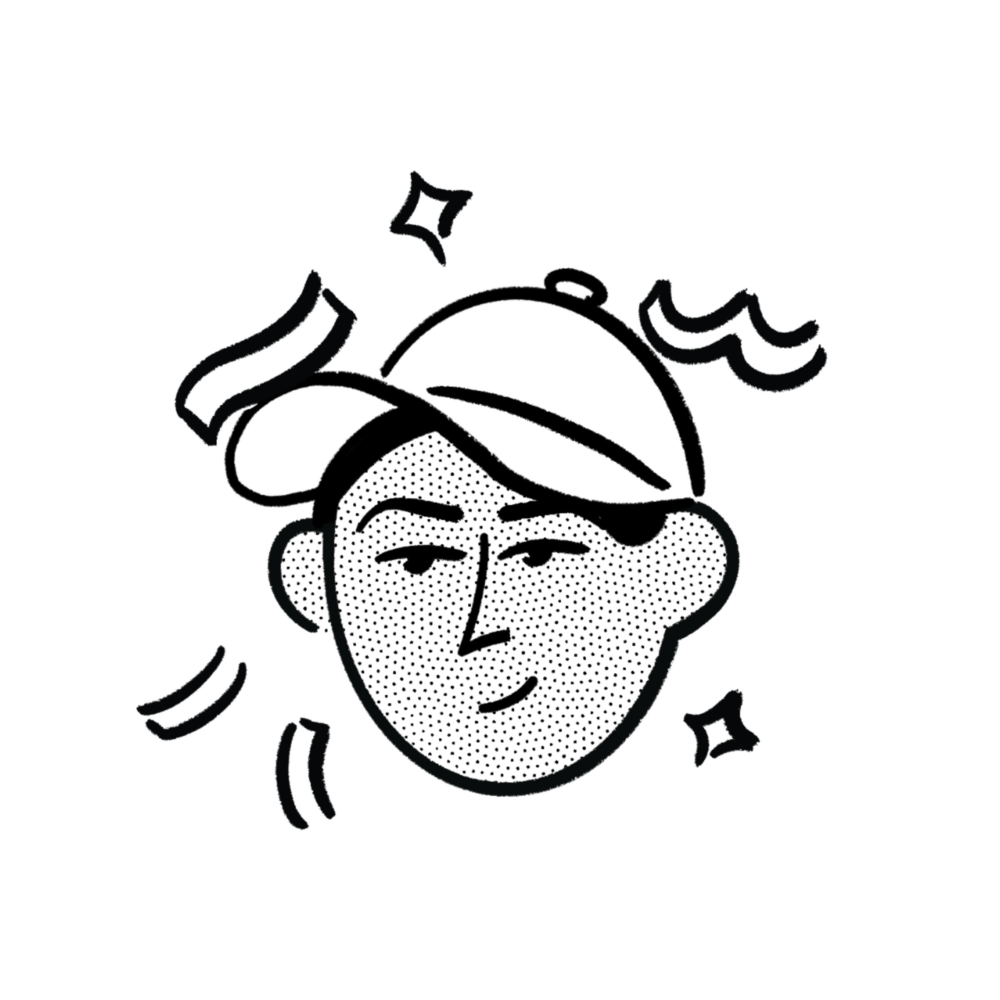

tanujpandeybased in new delhi
currently building STRIDE a running app that makes runs matter. also as a side quest helping lawyers translate boring native language documents into english using ai.
obsessing over making money not from a job lately.
last updated:
born in madhya pradesh, raised in new delhi. i've always been more interested in understanding how things work than becoming an expert in one thing ad. that's taken me through finance, startups, product thinking, ai, customer research, and plenty of unexpected rabbit holes . studied bba(fia) from shaheed sukhdev college of business studies . now i spend my time vibe-coding my ideas to life.
off the clock: i read, run, go to the gym, watch mma & football and spend an unreasonable amount time losing at chess.
more coming. i write to think.
view all posts →i reply to every thoughtful email. try me.